15+ Easy Christmas Crockpot Meals for a Crowd
📌 Save to Pinterest
Christmas dinner for a crowd should not mean standing at the stove all day. These fifteen slow cooker meals — big-batch soups, savory pies, hearty stews and crowd-pleasing mains — cook themselves while you decorate the tree, wrap the last gifts, or simply enjoy the morning. Load the slow cooker, set the timer, and dinner takes care of itself.
How to plan a crockpot Christmas dinner
Start with the cook time, not the recipe: soups and stews that need 6 to 8 hours go in first thing in the morning, while quicker dishes like cobbler or stuffed shells can start after lunch. Choose one soup, one hearty main and one sweet finish so the table feels complete without three slow cookers running at once. And remember the golden slow cooker rule — never lift the lid to peek, or the heat escapes and the cook time stretches.
Good to know: Everything is written in American English, and measurements use US customary units — cups, tablespoons, and Fahrenheit — for cooks in the United States. Always follow safe food-handling guidance, and check labels for allergens when cooking for others.
Food safety: cook poultry to 165°F (74°C), ground meat to 160°F (71°C), and whole cuts of beef to 145°F (63°C) with a 3-minute rest. Never cook frozen meat in a slow cooker — thaw it first — and keep the lid on while cooking so the slow cooker stays hot enough. Refrigerate leftovers promptly. Check with a food thermometer.
Pies & hearty suppers
Pies and hearty suppers that feed a crowd from one slow cooker — rich fillings under golden toppings.
1. Slow Cooker Shepherd's Pie
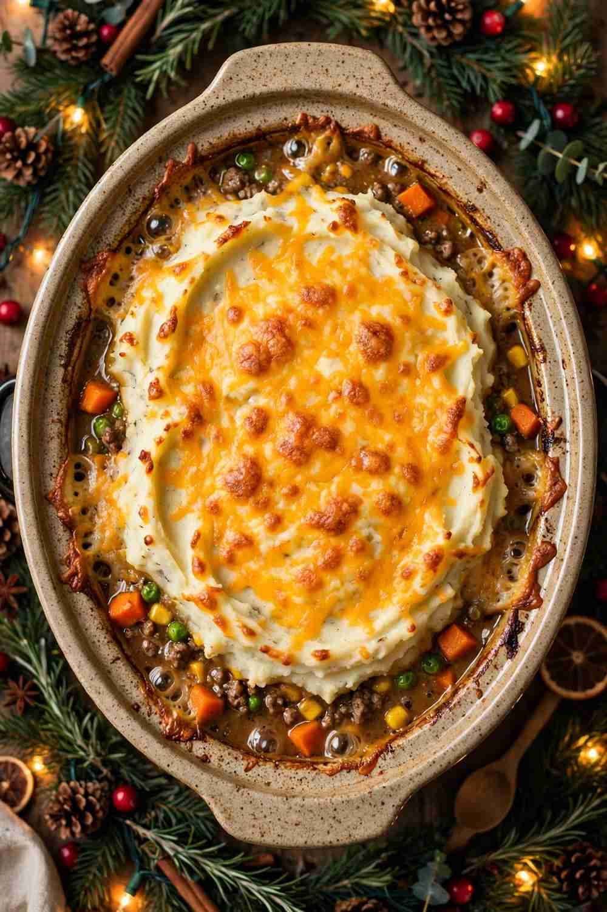
Rich ground lamb simmers in savory beef broth with carrots, peas, and corn, then gets crowned with a thick blanket of creamy mashed potatoes and melted cheddar. The topping turns golden and bubbly at the edges while the filling stays juicy underneath. It is the kind of big-batch comfort food that feeds a Christmas table from one slow cooker.
Ingredients
- 2 lbs ground lamb
- 2 cups frozen mixed vegetables
- 1 onion
- 2 cups beef broth
- 2 tbsp tomato paste
- 4 cups mashed potatoes
- 1 cup shredded cheddar
Directions
- Heat a skillet over medium-high heat. Add the ground lamb and onion, breaking the meat apart with a wooden spoon, and cook 8 to 10 minutes until the lamb is browned and the onion is soft.
- Drain off any excess fat, then spoon the lamb and onion into the bottom of a slow cooker.
- Stir in the frozen mixed vegetables, beef broth, and tomato paste until everything is evenly combined.
- Cover and cook on low for 4 hours, until the vegetables are tender and the flavors have come together.
- Spoon the mashed potatoes over the hot filling in an even layer, spreading them to the edges so the filling is sealed underneath.
- Sprinkle the shredded cheddar evenly over the potatoes.
- Cover and cook 30 more minutes, until the cheese is melted and the edges are bubbly. Serve hot.
Food safety: cook the ground lamb to 160°F (71°C) — check with a food thermometer.
2. Slow Cooker Chicken Pot Pie
Creamy chicken and vegetables simmer together in a rich, thyme-scented sauce, then get finished with golden biscuit pieces that bake right on top. The biscuits soak up the savory gravy at the edges and stay fluffy in the middle, turning a classic pot pie into a hands-off slow cooker supper that feeds a crowd with almost no work.
Ingredients
- 2 lbs chicken breasts
- 2 cups frozen mixed vegetables
- 1 can (10 oz) cream of chicken soup
- 1 cup chicken broth
- 1 tsp thyme
- 1 can refrigerated biscuit dough
Directions
- Place the chicken breasts in the bottom of a slow cooker in a single layer.
- Add the frozen mixed vegetables, cream of chicken soup, chicken broth, and thyme, stirring gently to coat the chicken.
- Cover and cook on low for 5 hours, until the chicken is cooked through and tender.
- Lift the chicken out onto a cutting board and shred it with two forks.
- Stir the shredded chicken back into the sauce until it is evenly mixed through.
- Open the biscuit dough and cut each biscuit into quarters, then drop the pieces evenly over the top of the filling.
- Cover and cook on high for 45 minutes, until the biscuits are puffed, golden, and cooked through. Serve hot.
Food safety: cook the chicken to 165°F (74°C) — check with a food thermometer.
Soups & stews for a crowd
Big-batch soups are the easiest way to feed a crowd: one pot, one ladle, and everyone serves themselves.
3. Slow Cooker Minestrone
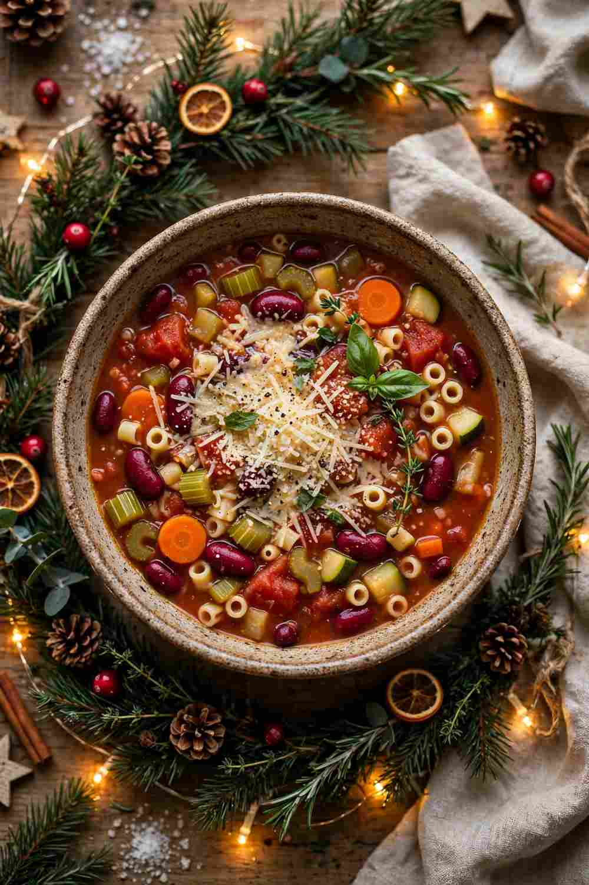
A big pot of hearty minestrone, packed with kidney beans, tomatoes, carrots, celery, and zucchini in a rich vegetable broth. Small pasta cooks right in the soup, soaking up flavor, and a shower of Parmesan over each bowl makes it taste like a long-simmered Italian classic — with almost no hands-on time.
Ingredients
- 2 cans (15 oz) kidney beans
- 1 can (28 oz) diced tomatoes
- 2 carrots
- 2 celery stalks
- 1 zucchini
- 4 cups vegetable broth
- 1 cup small pasta
- 1 tsp Italian seasoning
- Parmesan
Directions
- Rinse and drain the kidney beans, then add them to a slow cooker.
- Stir in the diced tomatoes with their juices, carrots, celery, zucchini, vegetable broth, and Italian seasoning.
- Cover and cook on low for 6 hours, until the vegetables are tender and the broth is richly flavored.
- Stir in the small pasta, making sure it is pushed down under the surface of the soup.
- Cover and cook 30 more minutes, until the pasta is tender but still holds its shape.
- Taste and season with salt and pepper as needed.
- Ladle into bowls and serve hot, with grated Parmesan to sprinkle over the top.
4. Slow Cooker French Onion Soup
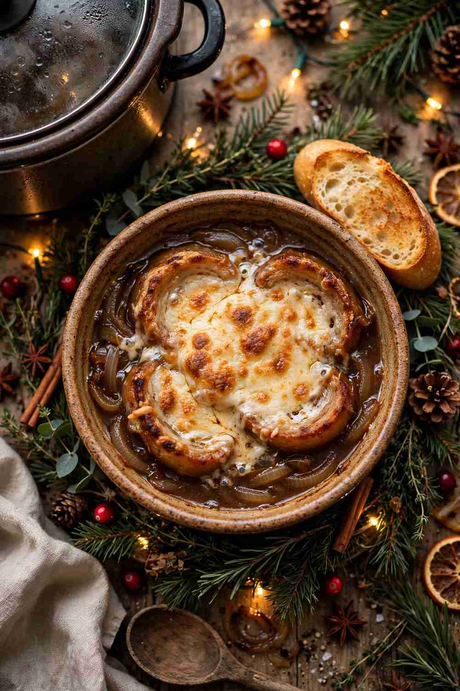
Onions melt down slowly in butter until deeply sweet, then simmer in rich beef broth with Worcestershire sauce and thyme. Each bowl gets a crisp baguette slice and a blanket of Gruyère, broiled just long enough to bubble and brown. It is a restaurant-style soup made easy, and it tastes like the holidays.
Ingredients
- 4 large onions
- 4 tbsp butter
- 6 cups beef broth
- 1 tbsp Worcestershire sauce
- 1 tsp thyme
- baguette slices
- 1 cup shredded Gruyère
Directions
- Peel the onions, slice them in half from root to stem, and cut them into thin slices.
- Melt the butter in a large skillet over medium heat, add the onions, and cook for 12 to 15 minutes, stirring often, until they are soft and lightly golden.
- Transfer the onions to a slow cooker and pour in the beef broth.
- Stir in the Worcestershire sauce and thyme.
- Cover and cook on low for 6 hours, until the soup is deep, sweet, and fragrant.
- Ladle the hot soup into oven-safe bowls, float a baguette slice on top of each, and sprinkle generously with shredded Gruyère.
- Broil for about 2 minutes, watching closely, until the cheese is melted, bubbly, and lightly browned. Serve right away.
5. Slow Cooker Italian Wedding Soup
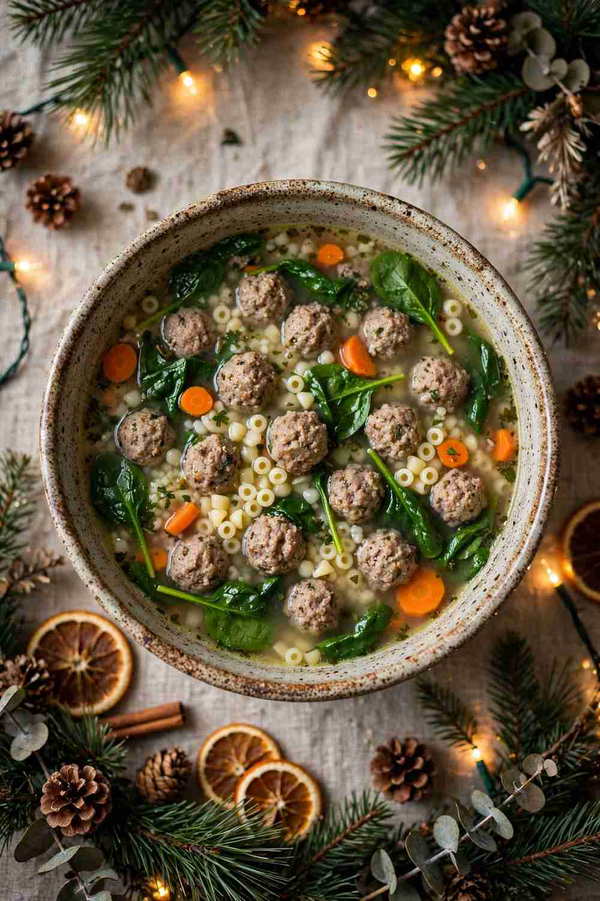
Tiny hand-rolled meatballs simmer in a light, savory chicken broth with small pasta, fresh spinach, and sweet carrot. The broth stays clear and bright while the meatballs turn tender and juicy, and every spoonful feels warm and wholesome. It is a gentle, crowd-pleasing soup that belongs on a Christmas table.
Ingredients
- 1 lb ground beef
- 1/2 cup breadcrumbs
- 1 egg
- 1/4 cup Parmesan
- 6 cups chicken broth
- 1 cup small pasta
- 2 cups spinach
- 1 carrot
Directions
- In a large bowl, combine the ground beef, breadcrumbs, egg, and Parmesan, mixing gently with your hands just until everything holds together.
- Roll the mixture into small meatballs, about 1 inch across, and set them on a plate.
- Pour the chicken broth into a slow cooker and stir in the small pasta, spinach, and carrot.
- Cover and cook on low for 5 hours, until the pasta is tender and the vegetables are soft.
- Gently drop the meatballs into the hot soup, nestling them under the surface so they cook evenly.
- Cover and cook 1 more hour, until the meatballs are cooked through and tender.
- Taste and season with salt and pepper, then ladle into bowls and serve warm.
Food safety: cook the meatballs to 160°F (71°C).
6. Slow Cooker Beef Stew with Root Vegetables
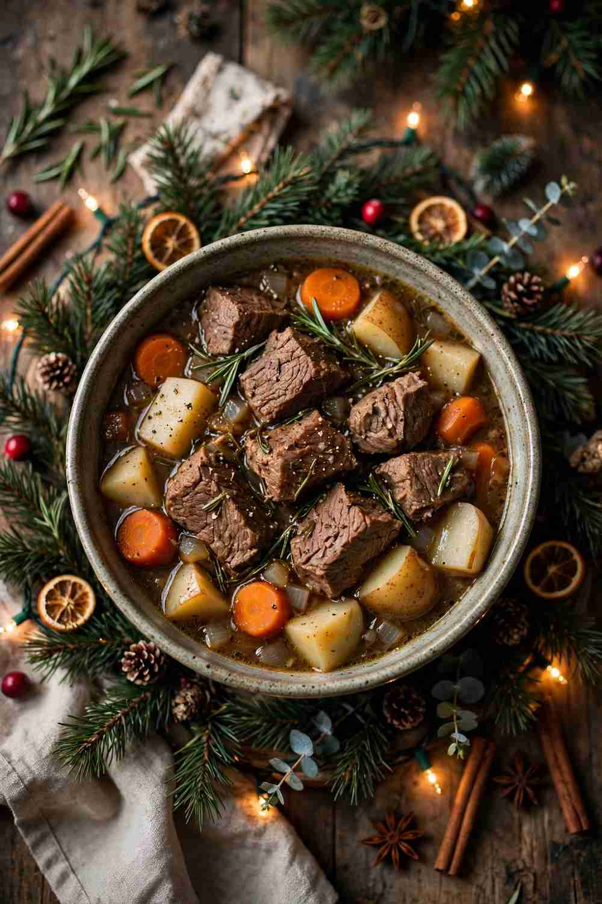
Chunks of beef turn meltingly tender in a rich, rosemary-scented broth with carrots, parsnips, and potatoes that soak up every bit of flavor. The vegetables hold their shape while the meat falls apart at the touch of a fork. It is a proper old-fashioned stew, made for a crowd and a cold Christmas evening.
Ingredients
- 2 lbs beef stew meat
- 4 carrots
- 4 parsnips
- 4 potatoes
- 1 onion
- 4 cups beef broth
- 2 tbsp tomato paste
- 1 tsp rosemary
Directions
- Heat a drizzle of oil in a large skillet over medium-high heat and brown the beef stew meat in batches, about 4 minutes per batch, so it gets a deep golden crust.
- Transfer the browned beef to a slow cooker.
- Add the carrots, parsnips, potatoes, onion, beef broth, tomato paste, and rosemary, stirring to combine.
- Cover and cook on low for 8 hours, until the beef is tender and the vegetables are soft.
- Lift the lid and stir the stew gently, scraping up any bits from the bottom.
- Taste and season generously with salt and pepper.
- Ladle into deep bowls and serve hot, with crusty bread for the rich broth.
Food safety: cook the beef to 145°F (63°C) — stew is done when tender.
7. Slow Cooker Chicken Noodle Soup
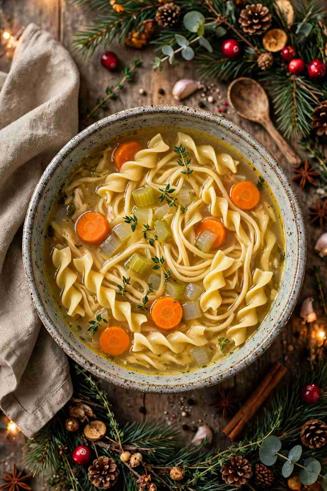
The classic comfort soup, made in a big batch: tender shredded chicken, sweet carrots, celery, and onion in a golden, thyme-scented broth, with soft egg noodles stirred in at the end. It is gentle, warming, and endlessly comforting — the bowl everyone reaches for first on a cold Christmas day.
Ingredients
- 2 lbs chicken breasts
- 8 oz egg noodles
- 3 carrots
- 3 celery stalks
- 1 onion
- 8 cups chicken broth
- 1 tsp thyme
- 1 bay leaf
Directions
- Place the chicken breasts in the bottom of a slow cooker in a single layer.
- Add the carrots, celery, onion, chicken broth, thyme, and bay leaf, stirring gently to combine.
- Cover and cook on low for 6 hours, until the chicken is cooked through and the vegetables are tender.
- Lift the chicken out onto a cutting board and shred it with two forks.
- Stir the shredded chicken back into the soup.
- Add the egg noodles, pushing them down into the broth so they cook evenly.
- Cover and cook 20 more minutes, until the noodles are tender. Remove the bay leaf and serve hot.
Food safety: cook the chicken to 165°F (74°C) — check with a food thermometer.
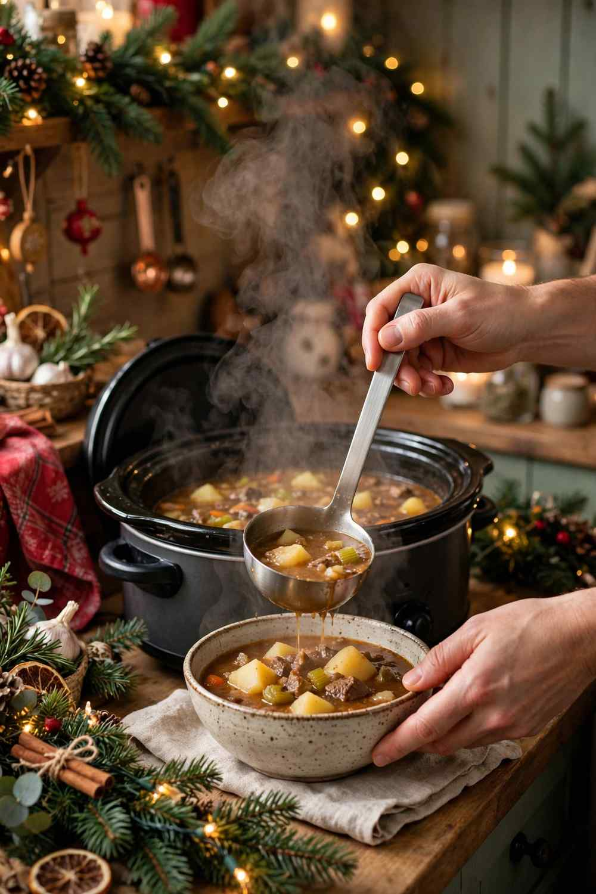
8. Slow Cooker Ham and Bean Soup
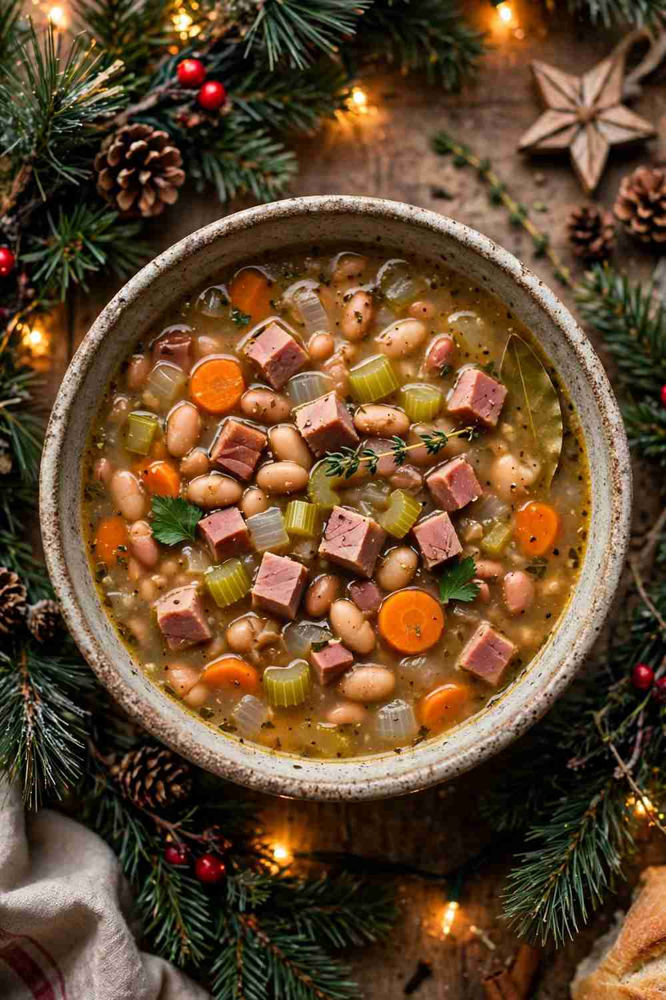
Smoky diced ham and creamy navy beans simmer all day in a savory chicken broth with carrots, celery, and onion until everything is soft and deeply flavored. The beans break down just enough to thicken the soup, making it rich without any cream. It is a thrifty, hearty bowl that tastes like it cooked for hours — because it did.
Ingredients
- 2 cups diced ham
- 1 lb dried navy beans
- 2 carrots
- 2 celery stalks
- 1 onion
- 8 cups chicken broth
- 1 tsp thyme
- 1 bay leaf
Directions
- Place the dried navy beans in a large bowl, cover with cold water, and soak overnight. Drain and rinse before cooking.
- Add the soaked beans, diced ham, carrots, celery, onion, chicken broth, thyme, and bay leaf to a slow cooker.
- Stir everything together so the beans are covered by the broth.
- Cover and cook on low for 8 hours, until the beans are completely tender and creamy.
- Remove the bay leaf and give the soup a gentle stir, mashing a few beans against the side of the pot to thicken it if you like.
- Taste and season with salt and pepper, remembering the ham already adds salt.
- Ladle into bowls and serve hot with crusty bread.
A sweet finish
One slow cooker dessert to end the meal — warm, golden and ready when everyone is.
9. Slow Cooker Peach Cobbler
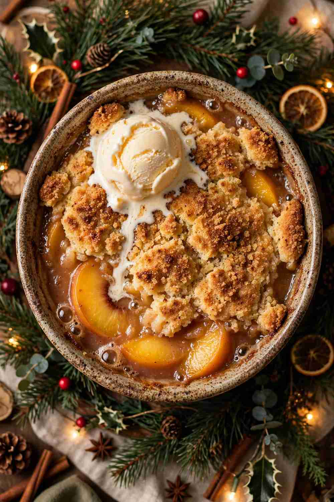
Warm canned peaches bubble under a golden, buttery cake-mix crust with cinnamon and brown sugar, turning into a cobbler that is crisp at the edges and soft and syrupy in the middle. A scoop of vanilla ice cream melting over the top is all it needs. It is the easiest holiday dessert you will ever make.
Ingredients
- 2 cans (15 oz) sliced peaches
- 1 box yellow cake mix
- 1/2 cup butter
- 1 tsp cinnamon
- 1/4 cup brown sugar
- vanilla ice cream
Directions
- Lightly grease the inside of a slow cooker with butter or cooking spray.
- Drain one can of sliced peaches and pour both cans, with the juice from the second can, into the slow cooker.
- Sprinkle the cinnamon and brown sugar evenly over the peaches.
- Scatter the dry yellow cake mix over the top in an even layer, covering the fruit completely.
- Cut the butter into small pieces and dot them evenly over the cake mix.
- Cover and cook on low for 3 hours, until the topping is golden and the fruit is bubbling at the edges.
- Spoon into bowls while warm and serve with a scoop of vanilla ice cream.
Slow cooker mains
The mains that make the table — slow-cooked suppers that feed a full Christmas table from one dish.
10. Slow Cooker Lentil Soup with Sausage
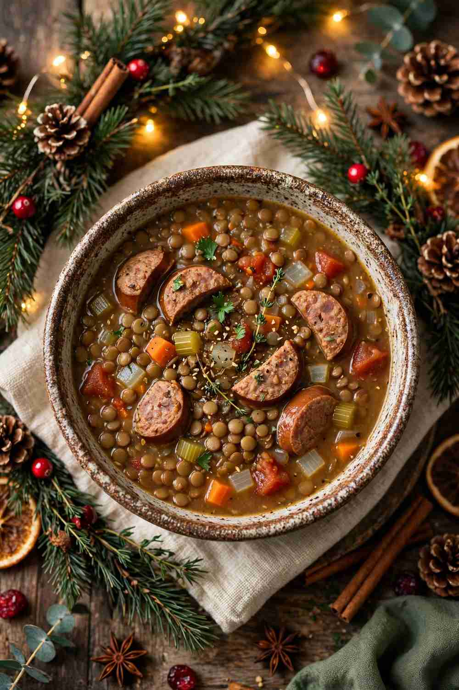
Earthy brown lentils and savory Italian sausage simmer together in a cumin-scented broth with carrots, celery, onion, and tomatoes until the lentils are soft and the flavors are deep and rounded. It is a filling, warming soup that costs little and feeds many — a perfect big-batch dish for a busy Christmas.
Ingredients
- 2 cups brown lentils
- 1 lb Italian sausage
- 2 carrots
- 2 celery stalks
- 1 onion
- 6 cups chicken broth
- 1 can (14 oz) diced tomatoes
- 1 tsp cumin
Directions
- Heat a large skillet over medium-high heat, crumble in the Italian sausage, and cook for 8 to 10 minutes, breaking it apart, until browned. Drain off the fat.
- Rinse the brown lentils and add them to a slow cooker.
- Add the browned sausage, carrots, celery, onion, chicken broth, diced tomatoes with their juices, and cumin.
- Stir everything together until evenly combined.
- Cover and cook on low for 7 hours, until the lentils are completely tender.
- Give the soup a good stir and taste for seasoning, adding salt and pepper as needed.
- Ladle into bowls and serve hot, with crusty bread for mopping up the broth.
Food safety: cook the sausage to 160°F (71°C) — check with a food thermometer.
11. Slow Cooker Taco Soup
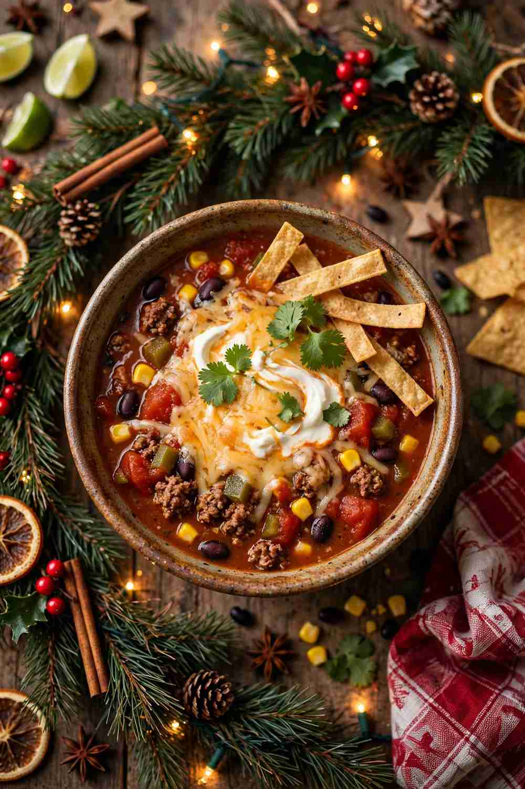
A zesty, taco-seasoned soup loaded with ground beef, black beans, corn, and tomatoes with green chiles in a rich beef broth. It tastes like taco night in a bowl — smoky, a little spicy, and deeply satisfying. Cheese and sour cream on top make it creamy, and it is made for feeding a hungry crowd.
Ingredients
- 1 lb ground beef
- 1 can (15 oz) black beans
- 1 can (15 oz) corn
- 1 can (10 oz) diced tomatoes with green chiles
- 1 packet taco seasoning
- 4 cups beef broth
- shredded cheese
- sour cream
Directions
- Heat a large skillet over medium-high heat and brown the ground beef, breaking it apart, for 8 to 10 minutes until no pink remains. Drain off the fat.
- Add the beef to a slow cooker.
- Stir in the black beans, corn, diced tomatoes with green chiles, taco seasoning, and beef broth.
- Cover and cook on low for 5 hours, until the flavors have come together and the soup is hot and fragrant.
- Give the soup a good stir and taste for seasoning, adding salt if needed.
- Ladle into bowls.
- Serve hot with shredded cheese and sour cream on top, plus tortilla chips or warm bread if you like.
Food safety: cook the ground beef to 160°F (71°C) — check with a food thermometer.
12. Slow Cooker Stuffed Shells
Jumbo pasta shells stuffed with creamy ricotta, mozzarella, and Parmesan bake slowly in marinara until the shells are tender and the filling is hot and bubbly — no boiling needed. The sauce keeps everything moist while the cheese melts into every corner. It is a cheesy, crowd-pleasing main that practically serves itself.
Ingredients
- 20 jumbo pasta shells
- 15 oz ricotta
- 1 egg
- 2 cups shredded mozzarella
- 1 jar (24 oz) marinara sauce
- 1/2 cup Parmesan
- 1 tsp Italian seasoning
Directions
- In a large bowl, stir together the ricotta, egg, 1 cup of the mozzarella, Parmesan, and Italian seasoning until smooth and evenly mixed.
- Spoon the cheese mixture into the dry jumbo shells, filling each one generously, and set them aside.
- Spread a thin layer of marinara sauce over the bottom of a slow cooker.
- Nestle the filled shells into the sauce in a single layer, open side up, fitting them snugly together.
- Pour the remaining marinara sauce over the shells and sprinkle with the rest of the mozzarella.
- Cover and cook on low for 3 hours, until the shells are tender and the cheese is melted and bubbly.
- Let the shells rest for 5 minutes, then spoon onto plates with extra sauce from the pot. Serve hot.
Food safety: cook until the filling is set — egg dishes should reach 160°F (71°C).
13. Slow Cooker Cheesy Chicken and Rice
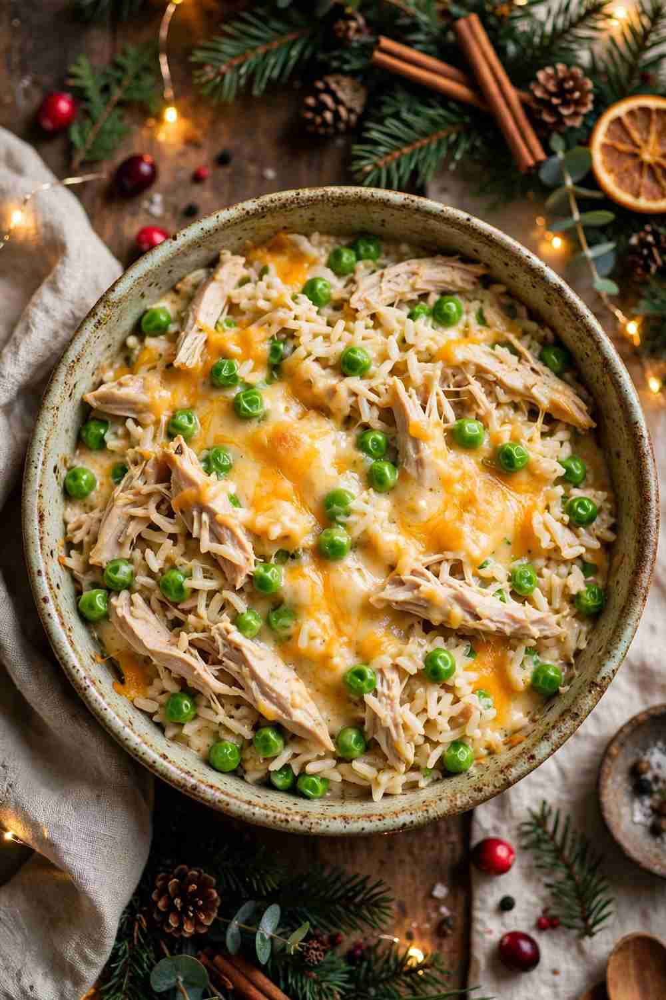
Tender shredded chicken, fluffy long-grain rice, and sweet peas come together in a creamy, cheesy sauce that cooks entirely in one pot. The cheddar melts in at the end, turning the whole dish rich and golden. It is the ultimate comfort supper — simple, filling, and made for a full Christmas table.
Ingredients
- 2 lbs chicken breasts
- 2 cups long-grain rice
- 1 can (10 oz) cream of chicken soup
- 2 cups chicken broth
- 2 cups shredded cheddar
- 1 cup frozen peas
Directions
- Place the chicken breasts in the bottom of a slow cooker in a single layer.
- Pour the long-grain rice evenly over and around the chicken.
- Stir in the cream of chicken soup and chicken broth until the rice is covered and everything is combined.
- Cover and cook on low for 5 hours, until the chicken is cooked through and the rice is tender.
- Lift the chicken out onto a cutting board and shred it with two forks.
- Stir the shredded chicken back into the rice, then add the shredded cheddar and frozen peas.
- Cover and cook 15 more minutes, until the cheese is melted and the peas are hot. Serve straight from the pot.
Food safety: cook the chicken to 165°F (74°C) — check with a food thermometer.
14. Slow Cooker Hawaiian Chicken
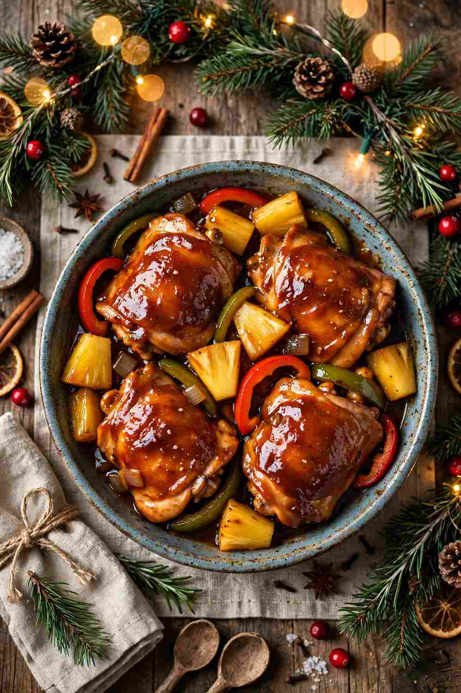
Sweet pineapple and tangy barbecue sauce cook down with brown sugar and soy sauce into a sticky, glossy glaze that coats tender chicken thighs. A bright bell pepper adds color and crunch, and the sauce is so good you will want rice to soak up every drop. It is sunshine on a Christmas table.
Ingredients
- 2 lbs chicken thighs
- 1 can (20 oz) pineapple chunks
- 1/2 cup barbecue sauce
- 1/4 cup brown sugar
- 2 tbsp soy sauce
- 1 bell pepper
- rice for serving
Directions
- Drain the can of pineapple chunks, saving the juice in a small bowl.
- Whisk the saved pineapple juice with the barbecue sauce, brown sugar, and soy sauce until smooth.
- Place the chicken thighs in a slow cooker in a single layer.
- Scatter the pineapple chunks and bell pepper over the chicken.
- Pour the sauce evenly over everything, turning the chicken once to coat it.
- Cover and cook on low for 5 hours, until the chicken is tender and the sauce is glossy and thick.
- Serve hot over rice, spooning plenty of sauce and pineapple over each portion.
Food safety: cook the chicken to 165°F (74°C) — check with a food thermometer.
15. Slow Cooker Barbacoa Beef
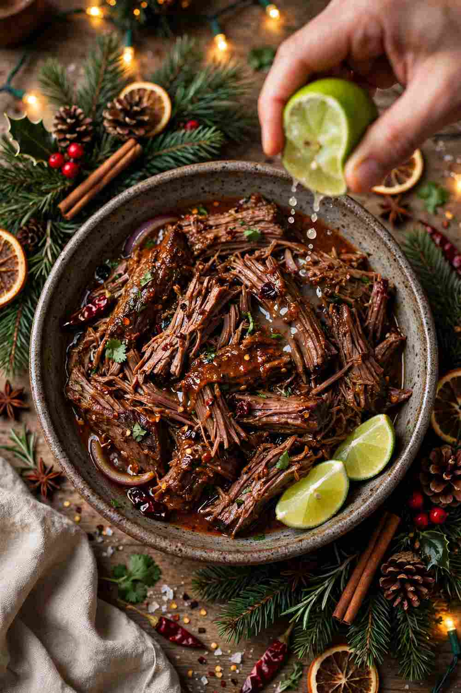
A whole chuck roast slow-cooks in a smoky chipotle sauce with onion, garlic, cumin, and oregano until it falls apart into juicy, spicy shreds. The adobo sauce turns deep and rich over the long cook, and a squeeze of fresh lime brightens every bite. Pile it into tacos or serve it straight from the pot.
Ingredients
- 1 chuck roast (3 lbs)
- 1 can (7 oz) chipotles in adobo
- 1 onion
- 4 garlic cloves
- 1 tbsp cumin
- 1 tsp oregano
- 1/2 cup beef broth
- lime wedges
Directions
- Add the chipotles in adobo, onion, garlic, cumin, oregano, and beef broth to a blender and blend until smooth.
- Place the chuck roast in a slow cooker.
- Pour the blended sauce evenly over the roast, turning it once so it is coated on all sides.
- Cover and cook on low for 8 hours, until the beef shreds easily with a fork.
- Lift the roast onto a cutting board and shred it with two forks, discarding any large pieces of fat.
- Return the shredded beef to the slow cooker and stir it through the sauce so it soaks up the flavor.
- Serve hot with lime wedges, in tacos, on rice, or straight from the pot.
Food safety: cook the beef to 145°F (63°C) — barbacoa is done when tender.
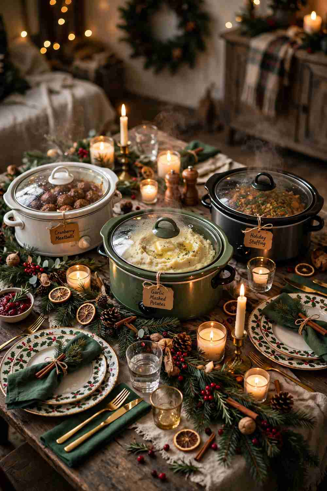
Make-ahead & serving tips
Brown meat before it goes into the slow cooker — that quick sear adds flavor no slow cook can build on its own. Keep the lid on while cooking: every peek lets out heat and adds 15 to 20 minutes to the cook time. Make soups and stews a day ahead if you can; they taste even better reheated. Keep finished dishes warm on the low setting while everyone serves themselves, and refrigerate leftovers within 2 hours.
Related articles
More roundups from the same table:
- 25+ Easy Christmas Crockpot Recipes — slow cooker mains, soups, sides and desserts for a hands-off holiday table.
- 25+ Slow Cooker Christmas Dinner Ideas — festive mains from lasagna and curry to chili and carnitas, all made hands-off.
- 20+ Crockpot Christmas Appetizers for Parties — slow cooker dips, sliders, wings and bites that stay warm all night.
- 25+ Christmas Side Dishes for Your Holiday Table — roasted vegetables, creamy potatoes, stuffing and cranberry sauce.
Keep exploring
- Browse the Lunch & Dinner roundups — Mains for midday and evening tables.
- Browse all six categories — breakfast, lunch and dinner, desserts, air fryer, healthy recipes, and appetizers.
- More about the kitchen — what The Tasty Recipe Co is and how it works.
About The Tasty Recipe Co: Learn how we research, organize and review our food collections — see our About Us and Editorial Policy pages.
Recipe results can vary with ingredients, equipment, and technique. See our Disclaimer for food-safety and allergy notes.